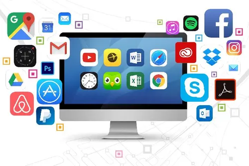

Mengenal Software Komputer
Instruksi digital yang menghidupkan perangkat keras.

Sumber: tempo.com
Apa itu Software?
Software atau perangkat lunak adalah kumpulan instruksi, data, atau program yang digunakan untuk mengoperasikan komputer dan menjalankan tugas-tugas tertentu. Jika hardware adalah tubuh dari sebuah komputer, maka software adalah pikiran atau jiwanya yang memberikan perintah agar hardware bisa bekerja sesuai keinginan pengguna.
Jenis-Jenis Software Utama
Secara umum, software dapat diklasifikasikan ke dalam beberapa kategori utama berdasarkan tujuannya:
- System Software: Perangkat lunak dasar yang mengelola sumber daya komputer (Contoh: Windows, macOS, Linux, Android).
- Application Software: Program yang dirancang untuk membantu pengguna melakukan tugas spesifik (Contoh: Microsoft Word, Google Chrome, Photoshop).
- Malicious Software (Malware): Software yang dibuat untuk merusak atau mengganggu sistem (Contoh: Virus, Ransomware).
- Programming Software: Alat yang digunakan pengembang untuk membuat program lain (Contoh: VS Code, Compiler).
Peran Penting Sistem Operasi
Sistem Operasi (OS) adalah jenis system software yang paling krusial. OS bertindak sebagai perantara antara pengguna dan hardware komputer. Tanpa OS, pengguna tidak akan bisa menjalankan aplikasi tambahan atau mengelola file di dalam penyimpanan perangkat mereka.
Evolusi Software di Era Cloud
Di era modern, software tidak lagi terbatas pada instalasi fisik di komputer. Munculnya teknologi *Cloud Computing* memungkinkan kita menggunakan software melalui internet (SaaS - Software as a Service), seperti Google Docs atau Netflix, di mana data dan pemrosesan terjadi di server pusat.